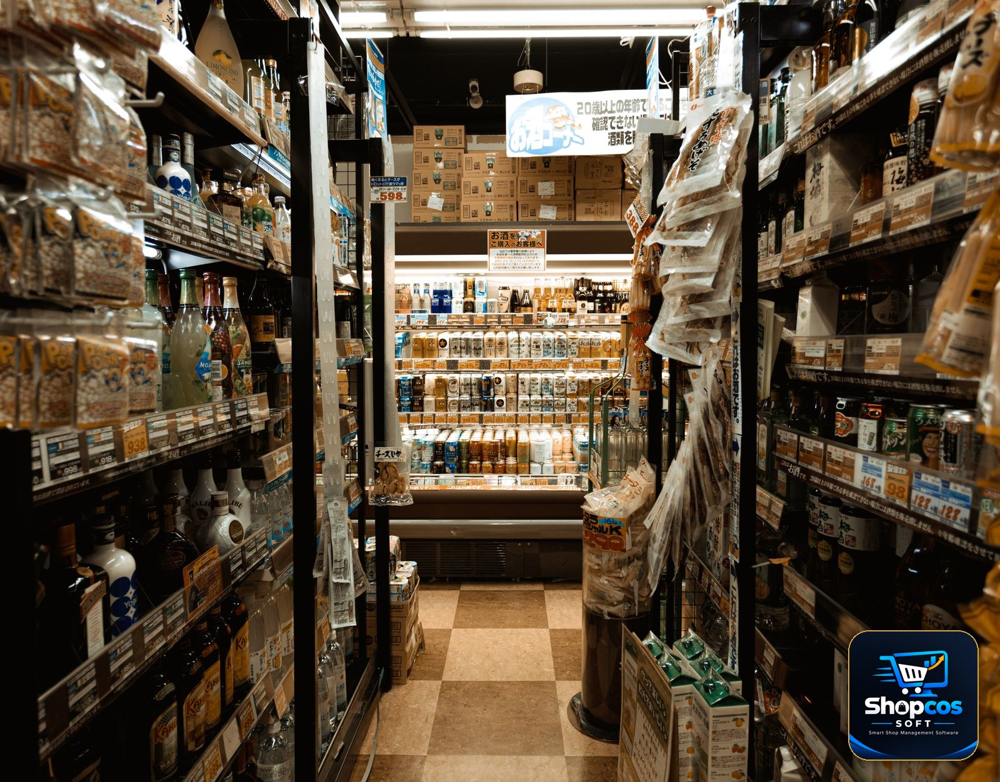

Walk into any busy kiryana store in Lahore at 7 in the evening and you will see the same scene: a queue at the counter, a shopkeeper adding figures in his head, a customer asking "bhai, mera udhar kitna hai?" and a shelf somewhere at the back that ran out of cooking oil three days ago without anyone noticing. The shop is doing fine — customers keep coming — but the owner is running it on memory, a register book, and a phone calculator. That works until the day it doesn't: the day the register goes missing, the day a regular customer disputes a balance, or the day you realise you have been out of your best-selling item for a week.
Shop management software is the answer to all three of those problems at once. Not three different apps, not a billing app plus a khata app plus a stock register — one system that handles the billing at the counter, the stock on the shelves, and the udhar in the ledger, all in one place, on one screen, in one language your staff actually reads. This guide explains what shop management software in Pakistan really is, what it should do for a small shop, what it costs, and how to pick the right one without getting sold a system built for a supermarket chain.

What "Shop Management Software" Actually Means
The name sounds grander than it is. Strip away the marketing and shop management software is simply this: one program on your shop's computer that runs the three jobs a shop does every single day — selling, stocking, and keeping accounts — so that the three jobs talk to each other instead of living in three different places.
Here is the difference it makes in practice. A customer buys ten items, two of them on udhar. In a shop without software, that one sale creates three separate chores: a bill to write, stock to remember to reduce, and a khata entry to write in the register. In a shop with management software, the sale is entered once at the counter and all three things happen by themselves — the bill prints, the stock drops, and the customer's udhar balance updates. One entry, three jobs done. That is the whole idea.
It is worth being clear about what it is not. It is not accounting software — you do not need balance sheets and tax returns at a kiryana counter, and the shopkeeper who buys an accountant's program usually stops using it within a month. It is not a mobile khata app either — those are fine for a ledger on a phone, but a phone screen cannot run a billing counter, and your data sits in someone else's account. And it is not a point-of-sale terminal alone: a POS machine makes bills, but it does not manage your stock or chase your udhar. Shop management software is the thing that does all three, built for a small shop, not a chain. Our guide to choosing POS software in Pakistan explains the billing half in detail; this article covers the whole picture.
The Three Jobs Every Pakistani Shop Needs Done
Every shop in Pakistan, from a mohalla kiryana to a medical store in Samundri, runs on the same three jobs. Get them right and the shop makes money quietly. Get any one of them wrong and it leaks money every single day.
1. Billing — the money coming in
Billing is the job at the counter: take the items, add them up, take the money, give a bill. It sounds simple, and it is — until the queue is ten people long, the customer changes his mind about two items, and the shopkeeper has to redo the addition while the next customer waits. Fast billing is not a luxury; it is what keeps the queue moving and the customers coming back. A good system bills with a barcode scan or two taps, prints a clean receipt, and never makes the customer wait while someone does sums on a calculator.
2. Stock — the money sitting on the shelves
Stock is the money you cannot see. A shop with Rs 500,000 of goods on its shelves has Rs 500,000 sitting there in boxes and packets — and most shopkeepers have only a rough feeling about what is actually on those shelves. The stock job is knowing three things at all times: what you have, what is running out, and what is not selling. When stock is managed properly, your best sellers never run out, your slow items stop eating shelf space, and nothing expires quietly at the back. Our stock management tips for small shops show how much of this is habit — but the habit only sticks when the numbers are in front of you.
3. Khata — the money people owe you
Khata is the job nobody likes to talk about and every shop depends on. In most Pakistani shops, 20 to 40 percent of daily sales go on udhar, and the total udhar sitting out in the mohalla is often the biggest number in the business — bigger than a month's profit, sometimes bigger than the cash in the till. The khata job is knowing, for every customer, what they owe, since when, and what their limit is — and having a statement you can send on WhatsApp when the balance gets old. Our guide on how to manage udhar and khata covers the daily discipline; the software is what makes the discipline possible without an evening of register work.
The important thing is that these three jobs are not three separate problems. They are one problem with three faces: the same sale affects the bill, the stock, and the khata at the same moment. A system that handles all three together is not a luxury — it is the only way the numbers ever agree with each other.
Why Three Separate Tools Always Fail
Most shops that try software do it in pieces. First a billing app, because the queue is slow. Then a khata app on the phone, because the udhar is growing. Then a stock register — or a spreadsheet someone's nephew made. Each tool works fine on its own. Together, they fail in the same four ways, every time:
- The same sale gets entered three times. Once at the billing app, once in the khata app, once in the stock sheet. Triple work, and the day someone is busy, one of the three entries does not happen — and from then on, the three systems disagree and nobody knows which one is right.
- The numbers never match. The billing app says today's sale was Rs 85,000. The stock sheet says Rs 80,000 worth of goods left the shelves. The khata app says Rs 22,000 went on udhar. None of the three can explain the difference, because none of them can see the other two. The shopkeeper ends the day not knowing which number to trust.
- Three bills, three logins, three things to learn. Staff learn one system and ignore the other two. The owner ends up being the only person who knows how all three work, which means the shop cannot run properly when he is away for a day.
- Three subscriptions. A billing app at Rs 1,000 a month, a khata app at Rs 500, a stock tool at Rs 1,000 — and suddenly the shop is paying Rs 2,500 a month, Rs 30,000 a year, for three tools that do not talk to each other. One system that does all three costs less than the three pieces, and it actually works as one.
This is the single biggest reason to buy shop management software instead of a billing app: not the features, but the fact that the features share one set of numbers. One entry at the counter, and the bill, the stock and the khata all update together. There is nothing to reconcile at night, because there was never anything to disagree.
The number to remember: a shop paying Rs 2,000 a month for software spends Rs 72,000 in three years — and the day it stops paying, the software stops opening. A one-time licence of Rs 40,000 costs less than two years of that subscription, and after that the software is yours whether you ever pay another rupee or not. Over three years, the one-time option saves Rs 32,000 — before counting the second and third subscriptions it replaces.
Billing That Keeps Up With a Busy Counter
Billing is where the customer meets your shop, so it is where bad software hurts first. Judge any shop management system by standing at a busy counter in your head and asking these questions:
- How fast is one sale? A regular customer's weekly groceries — ten to fifteen items — should take under a minute from first scan to printed bill. If the cashier has to tap through three screens per item, the queue will grow and customers will leave.
- Does it handle loose items? Pakistani shops sell by weight and by piece: a kilo of sugar, half a kilo of daal, two bars of soap, a single egg. The system must bill loose quantities and fractions without a workaround, and it must handle weighing-scale items if you have a scale.
- Can it split cash and udhar in one bill? The customer pays Rs 1,000 cash and takes Rs 500 on udhar. This is the most common transaction in a Pakistani shop, and it must be one bill — half cash, half credit — with the udhar half landing in the customer's khata automatically. If the cashier has to make two bills or write the udhar in a register afterwards, the system has already failed.
- Does the bill look like your shop? Your shop name, your phone number, a thank-you line — and the bill should print on a small thermal printer in seconds, not on an A4 sheet from an office printer.
- What happens when the light goes out? Load shedding is not an exception in Pakistan; it is the schedule. Billing must keep working with no internet and no electricity worry — on the shop's own computer, on a UPS, fully offline. Our comparison of offline vs online billing software explains why this one question eliminates half the systems on the market.
Stock You Can Actually Trust
Ask a shopkeeper how much stock he has and you will usually get an answer in feelings: "kaafi hai", "thoda kam hai", "pata nahi". Feelings are not stock management. A shop management system should be able to tell you, in seconds, the four numbers that run the stock side of the business:
What is running out? The system should warn you before an item finishes, not after a customer asks for it and you have to say "khatam ho gaya". A low-stock alert on your top 20 items is worth more than a hundred-item stock report you never read.
What is not selling? Every shop has dead stock — items that have sat on the shelf for six months. The system should show you, item by item, what has not sold in 30, 60 or 90 days, so you can discount it, bundle it, or stop ordering it. Dead stock is cash that has been turned into packets nobody wants.
What is about to expire? For kiryana, general stores and especially medical stores, expiry is money thrown away. The system should flag items near expiry by date, so you can sell them first or return them — not discover them after the date has passed. Our guide to reducing expired product losses puts a number on this leak, and it is bigger than most shops think.
What is my real profit on each item? Buying rate versus selling rate, item by item. Without this, a shopkeeper can sell a hundred packets a day and still not know whether the shop made money or lost it. The system should show profit per item and per day — not just total sales, because total sales without profit is a vanity number.

Khata That Collects the Money, Not Just Records It
A khata that only records udhar is a museum. The point of a ledger is not to admire the balances — it is to get the money back. This is where most systems, and most shops, fall down: the register records everything beautifully and collects nothing.
A shop management system earns its keep on the khata side when it does four things. First, it sets a credit limit per customer — and warns the cashier, at the counter, before the sale crosses it. A limit that only exists as a note you have to remember is not a limit. Second, it sorts customers by how old their balance is, so the follow-up list writes itself: the oldest udhar first, every Friday, without an evening of page-flipping. Third, it sends a statement on WhatsApp in one tap — every purchase, every payment, the balance, the dates — because a customer who can see his own full statement argues far less about it, and pays faster. Our guide on how to send a bill on WhatsApp shows the exact wording that works. Fourth, it keeps the full history in date order, so when a customer says "I already paid Rs 5,000", the answer is on the screen in two seconds instead of an argument at the counter.
Here is a number worth sitting with. If your shop carries Rs 300,000 of udhar and even 10 percent of it goes stale — customers who moved away, balances nobody chased, payments nobody recorded — that is Rs 30,000 gone. Not lost in a robbery, not lost in a fire: lost in a register book that could not remind you. A system that chases the old balances every week pays for itself out of that one number alone.
Two Non-Negotiables in Pakistan: Offline and Urdu
Software made for another country usually fails in a Pakistani shop for two reasons, and both are easy to check before you buy.
Offline first. Your billing counter cannot depend on the internet. Load shedding takes the Wi-Fi with it, mobile data drops in the middle of the bazaar, and the queue does not wait for the connection to come back. The system must run 100 percent on the shop's own computer, with no internet needed at the counter, and sync or back up later when the connection returns. If a seller tells you "sir, internet to chahiye hoga" for basic billing, walk away — that system was not built for your shop.
Urdu, properly. Not a few Urdu labels pasted on an English program, but the whole counter in a language your staff reads: the buttons, the bill, the khata statement. If the software is English-only, your staff will avoid it, you will be the only person who can use it, and within a month the register book will be back on the counter. Ask to see the Urdu screens before you pay, and ask whether the printed bill and the WhatsApp statement can go out in Urdu too.
What Shop Management Software Costs in Pakistan
Three kinds of price exist in the Pakistani market, and they are not the same deal however similar the monthly number looks:
- Free apps and trials: Rs 0 to start. Genuinely useful for trying the idea, and a 7-day free trial with your real shop data is the only honest way to judge a system. But "free forever" usually means advertising, locked features, or your data sitting in someone else's account. Use free to test; do not build your business on it.
- Monthly subscriptions: typically Rs 1,000 to Rs 3,000 a month from local vendors, Rs 500 to Rs 6,999 across the wider market. It looks small until you multiply: Rs 2,000 a month is Rs 24,000 a year and Rs 72,000 in three years — and the day you stop paying, the software stops opening. Your shop's records become a hostage to the next payment. Our comparison of monthly subscription vs one-time payment works out this three-year maths in full, item by item.
- One-time payment: shopcos soft, for example, is Rs 40,000 once for a lifetime licence, with a 7-day free trial. That is less than two years of a Rs 2,000 monthly subscription, and after that the software is yours whether you ever pay another rupee or not. The full counter setup — software, printer, scanner — is covered in our POS software cost guide for Pakistan, so you can budget the whole counter, not just the program.
Whichever model you choose, judge it against the two leaks in this article: the udhar that goes stale because nobody chased it, and the stock that expires or sits unsold because nobody saw it. A system only has to recover a fraction of either leak to pay for itself — and it has to do it every year, not once.
The 10-Point Checklist Before You Buy
Do not buy on a demo video. Run through this list with your own shop in mind, and test the top three items with your real data during the free trial:
- One entry, three updates. Make one sale — half cash, half udhar — and check that the bill, the stock and the khata all updated from that single entry. If any one of them needs a second entry, it is not one system.
- Works fully offline. Turn the Wi-Fi off and bill ten customers. If anything stops, the system fails the Pakistan test.
- Full Urdu interface. Buttons, bills and statements — all readable by the people who actually work your counter.
- Credit limits that stop the sale. Set a customer's limit to Rs 5,000 and try to sell him Rs 6,000 on udhar. The system should warn you or refuse — at the counter, before the goods leave.
- WhatsApp statements in one tap. Send a real customer's statement to your own phone and read it as a customer would. If it is confusing to you, it will be confusing to him.
- Low-stock and expiry alerts. Check that the system warns you before items run out or expire — not in a report you have to remember to open.
- Daily profit in one screen. Today's sale, today's profit, today's udhar — without a calculator and without exporting a spreadsheet.
- Automatic daily backup you can see. Ask the seller: "if your company closes tomorrow, does my data still open?" The honest answer should be yes — a backup file on your own PC, plus a copy on your own Google Drive if you want one.
- Your data stays yours. No monthly hostage: if you stop paying, you should still be able to open your own records. One-time licences pass this test by definition.
- Real support in Urdu, on WhatsApp. Not a ticket portal, not an email that answers tomorrow — a WhatsApp number where someone answers in your language, the same day.
If a system passes all ten, it will still be running on your counter in a year. If it fails the first three, no feature list will save it.
The Bottom Line
A Pakistani shop does not need software that impresses a salesman. It needs one system that does the three jobs the shop already does — billing, stock and khata — in one place, offline, in Urdu, with numbers that agree with each other. Everything else is decoration.
The shops that switch are not the ones with the biggest budgets. They are the ones that added up the leaks: the udhar nobody chased, the stock nobody counted, the expired items nobody saw, and the evenings spent reconciling three different records that never matched. One system does not make those problems disappear by magic — but it makes them visible, and visible problems get fixed.
Start small this week:
- Add up your total udhar — properly, for the first time — and write the number down.
- Walk your shelves and list the ten items that have not sold in two months.
- Count how many minutes your counter spends on one sale at peak time.
- Try one shop management system free for 7 days, with your real customers and your real stock — not a demo with one fake entry.
- If the bill, the stock and the khata all move from a single entry, and the totals match at closing time, you have found your system.
Your shop already earns the money. The right system just makes sure you can see it, count it, and collect it — billing, stock and khata, in one place. Try shopcos soft free for 7 days on your own counter, with plans starting at Rs 25,000 one-time, and judge it on your busiest evening. Questions first? Message us on WhatsApp at 0326 4025618 — Urdu mein baat ho jayegi.
Photo credits: A cashier serving customers at a shop counter photo by Rachel Claire · A store aisle packed with products photo by Aleksandar Pasaric · A person counting cash with a calculator and paperwork photo by Tima Miroshnichenko — all via Pexels.